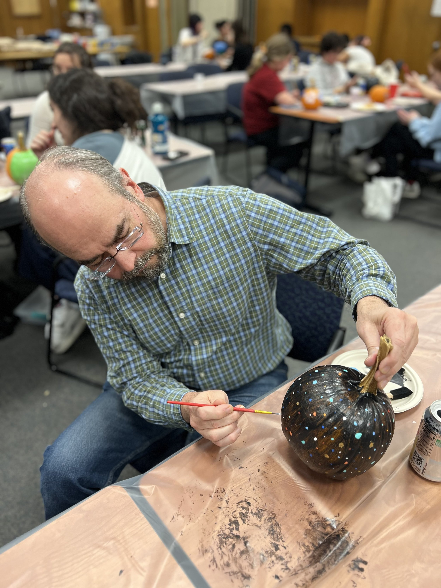
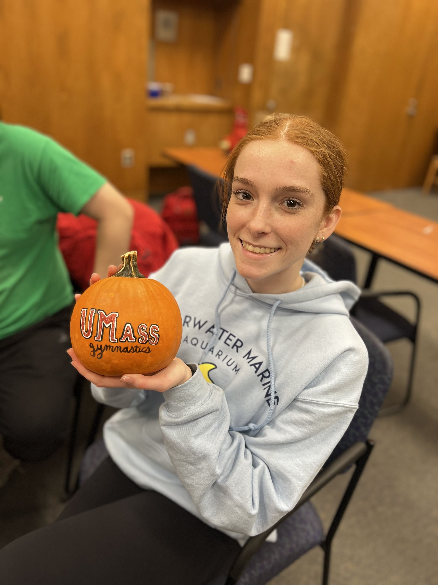
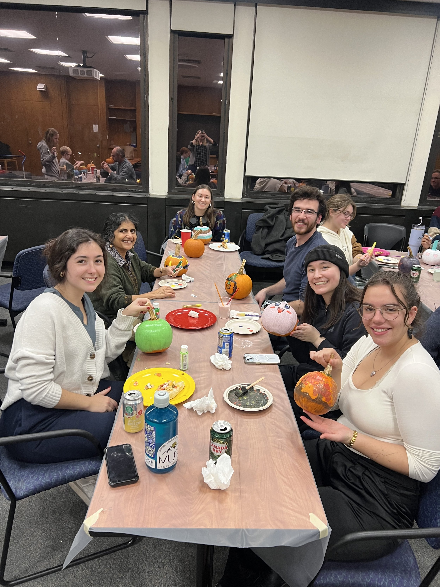
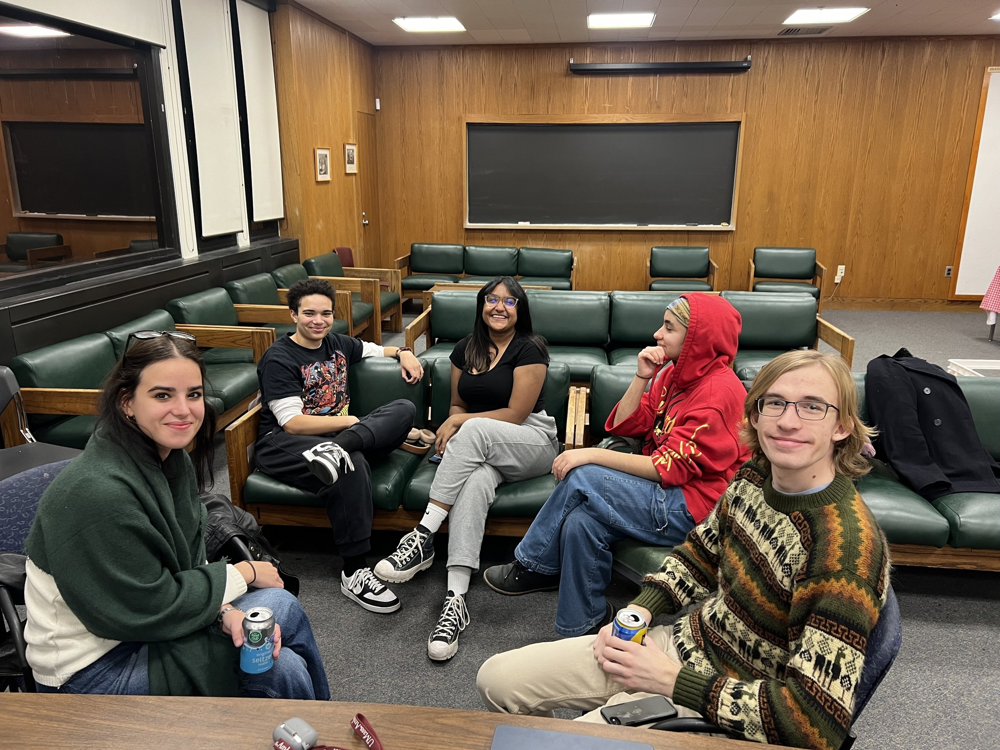
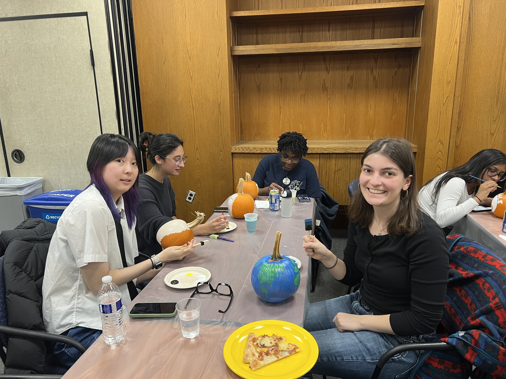
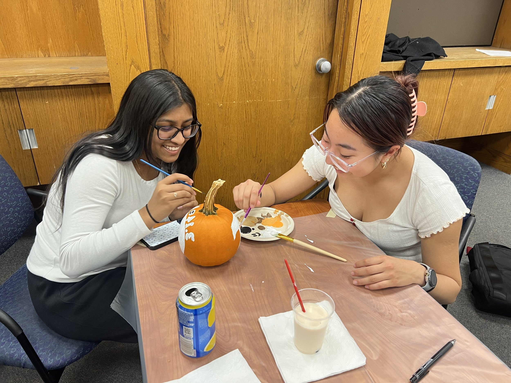
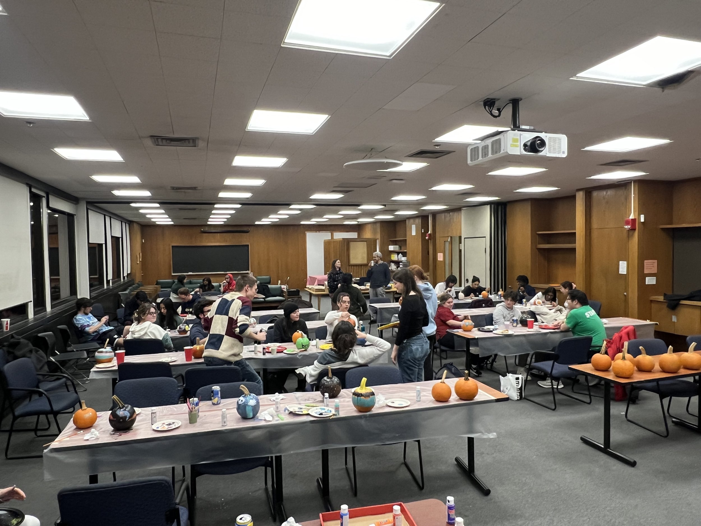
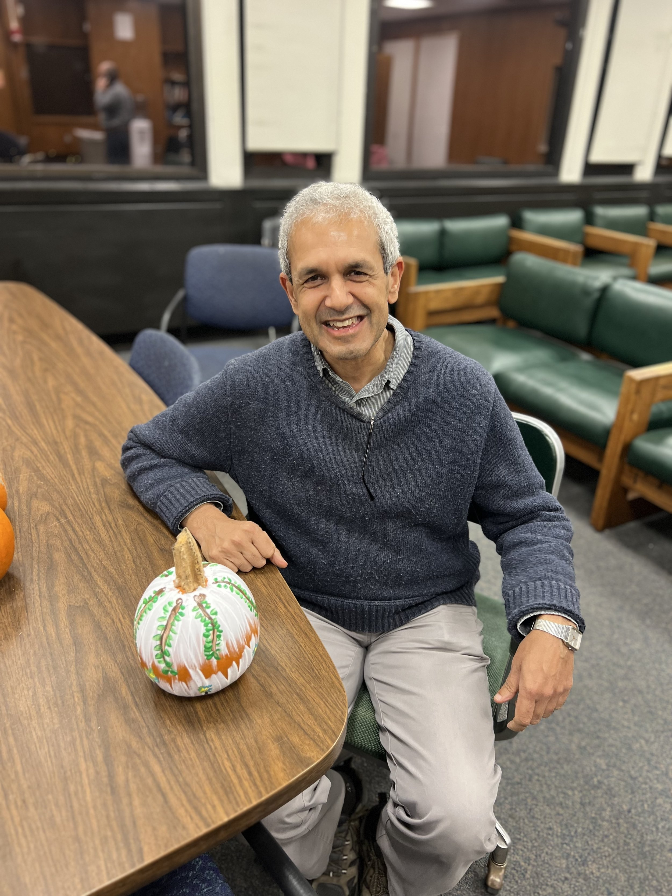

Second Annual Astronomy & Physics Peer Mentor Fall Pumpkin Party
Our second annual Fall Pumpkin Party took place on Friday November 15th for our Physics and Astronomy Peer Mentor Program. All of our peer mentors (junior and senior majors) and mentees (1st year physics and astronomy undergraduate students) were invited to join us in painting pumpkins, eating pizza, and catching up on how the busy semester is going. The talent in our student body, as evidenced by the amazing pumpkin artwork, shined through yet again this year!







